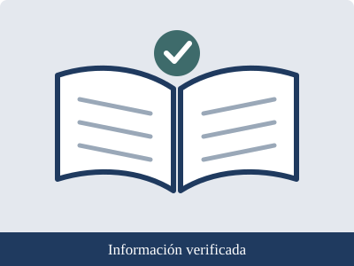

|
Autocuidado, prevención y derechos Proyecto Interdisciplinario · Luis Navarro · 2.º Técnico · Unidad Educativa San Esteban |
Inicio | Autocuidado | Prevención | Derechos | Fuentes confiables

En internet cualquier persona puede publicar contenido, y no todo es veraz. Antes de aceptar o compartir una información, conviene aplicar estos criterios:
Organización Mundial de la Salud (OMS): organismo de las Naciones Unidas especializado en salud. Se utilizó para datos de salud adolescente y actividad física. Documento: Ha llegado el momento de invertir en los adolescentes.
Organización Panamericana de la Salud (OPS): datos sobre las muertes de adolescentes que podrían evitarse.
Ministerio de Salud Pública del Ecuador: autoridad sanitaria nacional; información sobre servicios y programas de salud.
UNICEF Ecuador: organismo que trabaja por los derechos de la niñez y la adolescencia. Se utilizó para la Convención sobre los Derechos del Niño y sus cuatro principios.
Constitución de la República del Ecuador (2008): norma jurídica suprema del país; se consultaron los artículos 11, 44 y 45.
Infocop: medio del Consejo General de la Psicología de España; resume los datos de la OMS sobre salud mental en la adolescencia.
Ante cualquier duda sobre una información, es conveniente consultar a un docente, a la familia o al personal de un centro de salud. Informarse correctamente es también una forma de cuidarse y de respetar a los demás.
Elaborado por Luis Navarro · 2.º Técnico · Unidad Educativa San Esteban